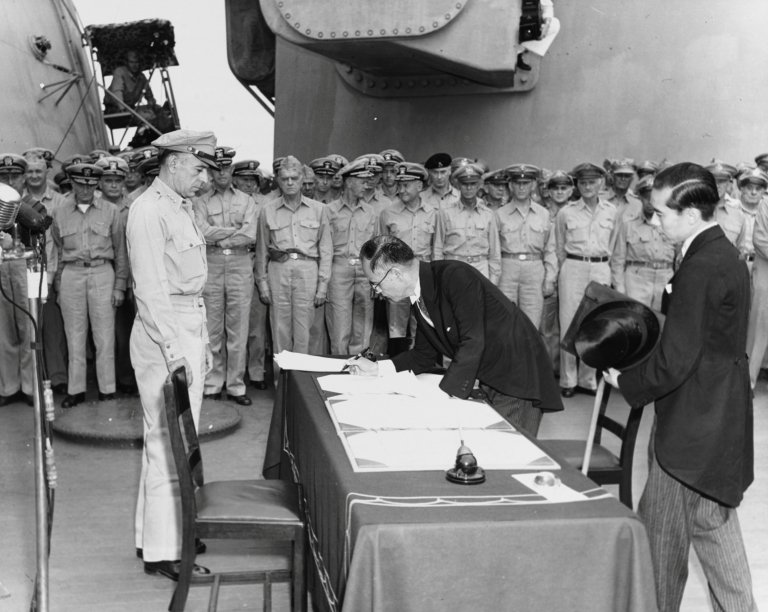

สงครามขยายตัว

หลังจากสงครามเริ่มขึ้น เยอรมนีสามารถยึดครองหลายประเทศในยุโรป รวมถึงฝรั่งเศส และพยายามโจมตีอังกฤษ ต่อมาเยอรมนีเปิดแนวรบด้านตะวันออกด้วยการบุกสหภาพโซเวียต ส่วนญี่ปุ่นก็ขยายอำนาจในเอเชียและมหาสมุทรแปซิฟิก จนในวันที่ 7 ธันวาคม ค.ศ. 1941 ญี่ปุ่นโจมตีฐานทัพเรือสหรัฐฯ ที่เพิร์ลฮาร์เบอร์ ทำให้สหรัฐอเมริกาเข้าร่วมสงครามอย่างเต็มตัว สงครามจึงขยายจากยุโรปไปยังเอเชียและแปซิฟิก ฝ่ายสัมพันธมิตร เช่น อังกฤษ สหรัฐอเมริกา และสหภาพโซเวียต ได้ร่วมมือกันต่อต้านฝ่ายอักษะ ซึ่งประกอบด้วยเยอรมนี อิตาลี และญี่ปุ่น ต่อมาฝ่ายสัมพันธมิตรเริ่มได้เปรียบและสามารถยึดพื้นที่คืนจากฝ่ายอักษะได้มากขึ้น